Последняя десятка: dnk.by, kalilaska.org, salonrozetok.by, lda-tehno.by, a-club.by, mountains.by, boooom.me, 1234567.by, involux.by, deltabank.by
Примечательные будни верстальщика
-
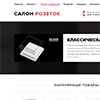
(2015-2016) Разработка сайта для Салона розеток.
Простая полностью адаптивная вёрскта.
Примечателен тем, что всё проектирую и внедряю сам. -
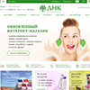
(2015) Вёрстка интернет магазина косметики.
Старался анимировать всё, что анимируется.
Практически все эффекты анимации сделаны c использованием CSS. -
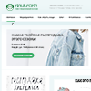
(2015) Вёрстка, проектирование и настройка шаблона для благотворительного магазина KaliLaska.
Полностью волонтёрская работа.
Ещё в процессе... -
(2015) Вёрстка промостаницы Альфаклуба.
- небольшой проект с кучей спец.эффектов.
Полностью адаптивная резиновая вёрскта, паралакс, SVG. -
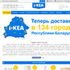
(2015) Партнёрская вёрстка интернет магазина i-kea.
- немного страниц
- немного пользовательских скриптов
Адаптивная вёрстка сделана поверх сущетвующей. -
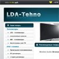
(2011-2014) Разработка, раскрутка и вёрстка интернет витрины LDA-techno.
- небольшой аккуратный проект.
Полностью моя вёрстка. Сам поддерживаю, сам допиливаю, сам раскручиваю, сам придумываю новые задачи (по мере появления свободного времени). Адаптивная вёрстка. Нативный JS. Финансовой заинтересованности не имею, можно сказать - волонтёрсткий опыт. -
(2014) Интернет-магазин компании Инволюкс.
- версии сайта под 1024 и 1280px.
- интересный дизайн.
- навороченный suggest в поиске.
- jQuery скрипты. -
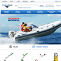
(2014) Интернет-магазин компании Сканлинк.
- версии сайта под 1024 и 1280px.
- немного страниц.
- навороченный suggest в поиске.
- jQuery скрипты. -
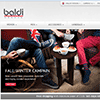
(2013) Магазинная версия сайта торговой марки baldi. Пока только для Армении.
- полностью адаптивная вёрстка.
- много страниц.
- jQuery скрипты.
- если вырезать весь битрикс - будет очень аккуратная вёрстка. -
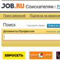
(2011-2013) Перевёрстка редизайна сайта Job.Ru. Пример по работе с высоконагруженным проектом.
- множество страниц
- большая куча кода
- пробы написания плагинов на jQuery. Проект на .net c#. -
(2012) Редизайн сайта epronto.ru. Много кода, не самые простые макеты.
- вёрстка макетов
- пользовательские скрипты
- адаптация текущего функционала -
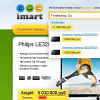
(2012) Верстка с нуля нового проекта интернет магазина.
Верстка практически вся моя, за исключением корзины и, возможно, уже каких-либо изменений.
Свои скрипты + адаптация уже готового скрипта (cloud-zoom). -
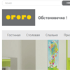
(2012) Вёрстка и ревёрстка нового дизайна сайта Огого.
- немного страниц
- немного пользовательских скриптов (меню, ротаторы, всяка мелочь). -
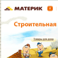
(2010) Вёрстка дизайна сайта Материк.
- немного страниц
- немного пользовательских скриптов.